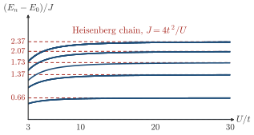
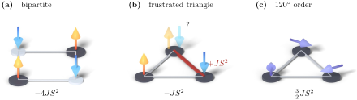
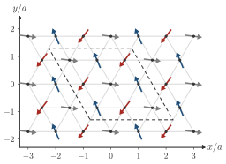
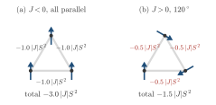

Advanced Quantum Materials 2027 · All lectures · Lecture notes
Session 6. Classical Magnetism and Magnons
6.9 The Heisenberg model on a general lattice
What spin model does the Hubbard model give on any lattice when \(U\) is large, and can all its bonds be satisfied at the same time? We will now see that every bond gets its own antiferromagnetic coupling \(J_{ij}=4t_{ij}^2/U\). For classical spins this gives the Néel state on a bipartite lattice, while on a triangle the best that the spins can do is a compromise at \(120^\circ\).
\[J = \frac{4t^2}{U}. \tag{6.4}\]
This is the coupling of the two spins of the Hubbard dimer of Section 6.8, with the hopping \(t\) and the repulsion \(U\gg t\) at half filling. It is the splitting between the triplet and the singlet, and the singlet is lower.
The argument of Section 6.8 did not use the fact that we had only two sites. Let us take a generic lattice with hopping \(t_{ij}\) between sites \(i\) and \(j\) and a local interaction \(U\). In the limit \(U\gg t_{ij}\) the same second-order argument applies to every connected pair independently, and it gives the generalized Heisenberg Hamiltonian, which is the main result of this section.
In the limit \(U\gg t_{ij}\), with one electron on each site, the Hubbard model becomes
\[H_\text{Heis} = \sum_{\langle ij\rangle} J_{ij}\, \mathbf S_i\cdot\mathbf S_j, \qquad J_{ij} = \frac{4t_{ij}^2}{U}. \tag{6.5}\]
The sum counts each bond once. A coupling \(J_{ij}>0\) favors antiparallel neighbors, which is antiferromagnetic, and \(J_{ij}<0\) favors parallel neighbors, which is ferromagnetic.
Since \(J_{ij}\propto t_{ij}^2\), this superexchange coupling, derived directly from a single-orbital Hubbard model, is always positive and antiferromagnetic, regardless of the sign or the geometry of \(t_{ij}\). More general microscopic models, which are not Hubbard models or have several orbitals, can give couplings of both signs, and they do. In Section 6.11 we will see explicitly how a ferromagnetic coupling appears when a second, intermediate orbital takes part. In all of this session we use the following sign convention. A coupling \(J_{ij}>0\) favors antiparallel neighboring spins, which is antiferromagnetic, and \(J_{ij}<0\) favors parallel neighboring spins, which is ferromagnetic. If we treat the spins in (6.5) as classical vectors, we already obtain both classical ground states on a bond between two sites, which are antiparallel for \(J>0\) and parallel for \(J<0\).

6.10 Bipartite order versus geometric frustration
On a bipartite lattice, such as the square or the honeycomb lattice, the sites split into two sublattices \(A\) and \(B\) so that every bond connects an \(A\) site with a \(B\) site. On such a lattice the antiferromagnetic Heisenberg model (6.5) has an obvious classical ground state. All spins on \(A\) point in one direction and all spins on \(B\) point in the opposite direction. In this way every bond has antiparallel neighbors at the same time, which is what it prefers. This is the collinear antiferromagnetic order with two sublattices that we already saw at the mean-field level in Section 6.4, and (6.5) explains why it appears.
In the large-\(U\) limit, the mean-field Hubbard model on a bipartite lattice gives this Néel state, and not the quantum ground state of this Heisenberg model. Its energy is the one of classical spins once we add the constant \(-J_{ij}/4\) per bond that (6.5) leaves out.
Frustrated lattices are different. On a non-bipartite lattice, of which the kagome and the triangular lattices are the standard examples, it is not possible to color the sites with two colors so that every bond connects opposite colors. For instance, a triangular plaquette has three sites that are all neighbors of each other, and no choice of up and down spins makes all three bonds antiparallel at the same time. The antiferromagnetic tendency of \(J_{ij}>0\) is still present on every single bond, but it cannot be satisfied everywhere at the same time, and this is what is called geometric frustration.
The best compromise for the system is usually a noncollinear arrangement, and the standard case is spins at \(120^\circ\) from each other on a triangular plaquette. This arrangement maximizes the total antiferromagnetic character bond by bond, without fully satisfying any single bond. This noncollinear character also appears directly in the mean-field solution of the corresponding electronic Hamiltonian, and not only in the spin model, as Schematic 6.7 shows for the triangular lattice. Figure 6.3 shows next to each other the bipartite case, the frustrated collinear attempt and the \(120^\circ\) compromise, together with the classical bond energies that decide between the last two.
Three classical spins of length \(S\) on a triangle, with the same \(J>0\) on the three bonds, have their lowest energy when they lie in a plane at \(120^\circ\) from each other,
\[\mathbf S_i\cdot\mathbf S_j=-\frac{S^2}{2}\ \text{on every bond},\qquad E_{120^\circ}=-\frac32JS^2,\qquad E_\text{collinear}=-JS^2.\]
No bond is fully satisfied, and still this compromise is lower than the best collinear state, where one bond stays frustrated.
The steps From one bond to the 120 degree triangle
We start with one bond. In the limit \(U\gg t_{ij}\) a virtual process of second order takes an electron from \(i\) to \(j\), and then it brings one of the two electrons of \(j\) back to \(i\). Any other second hop leaves one site empty and another one doubly occupied. So each bond acts alone, as the dimer of Section 6.8 does. On one bond the singlet goes down by \(4t_{ij}^2/U\) and the triplet stays at zero, which is the operator
\[J_{ij}\Big(\mathbf S_i\cdot\mathbf S_j-\frac14\Big),\qquad J_{ij}=\frac{4t_{ij}^2}{U},\]
since \(\mathbf S_i\cdot\mathbf S_j\) is \(-\tfrac34\) on the singlet and \(\tfrac14\) on the triplet. The sum over the bonds gives (6.5) plus the constant \(-\sum_{\langle ij\rangle}J_{ij}/4\). This constant shifts all the levels together, and (6.5) leaves it out.
Then we take three classical spins of length \(S\) on a triangle, with the same \(J>0\) on the three bonds. The square of the total spin \(\mathbf S_\text{tot}=\mathbf S_1+\mathbf S_2+\mathbf S_3\) is \(3S^2\) plus twice the sum over the bonds, so
\[\sum_\text{bonds}\mathbf S_i\cdot\mathbf S_j=\frac12\big(\mathbf S_\text{tot}^2-3S^2\big).\]
The energy is smallest when \(\mathbf S_\text{tot}=0\), meaning three spins in a plane at \(120^\circ\) from each other. Then each bond has \(\mathbf S_i\cdot\mathbf S_j=-S^2/2\), and the triangle has \(-\tfrac32JS^2\). Collinear spins cannot add up to zero, since three values \(\pm S\) give at least \(|\mathbf S_\text{tot}|=S\). So the best collinear state has \(\tfrac12(S^2-3S^2)J=-JS^2\).


g3_triangular_meanfield.py
mf="XY". The axes are the positions \(x\) and \(y\) in units of the lattice constant \(a\). The arrows give the direction of the moment \((m_x,m_y)\) of each site, and the three colors mark its three directions. We ran four random guesses. For each of them the angle between neighbors is \(120^\circ\) within \(0.2^\circ\) on the \(27\) bonds of the cell. This spread comes from where the loop stops, since with maxerror=1e-8 the difference is below \(0.001^\circ\). Every moment has the length \(0.922\), where \(1\) is a full moment. The energy is \(-3.8085t\) per cell for each guess. Look at any triangle, since its three arrows point in the three directions.Notebook check-in: session6.ipynb, “(Exercise) Magnetic instabilities of the square lattice” and “(Exercise) Non-collinear magnetic order from geometric frustration”
Compare at the mean-field level a bipartite lattice, the square lattice, with a frustrated one, the triangular or kagome lattice. The square lattice should converge to the collinear order with two sublattices of Section 6.10, and the frustrated lattice should converge to a noncollinear compromise. Both results can be traced back to the sign convention of (6.5) on each bond.
In ZnCu\(_3\)(OH)\(_6\)Cl\(_2\) the spins \(S=1/2\) form a kagome lattice. The susceptibility indicates a Curie-Weiss temperature of about \(-300\) K, and still no magnetic order is observed down to \(50\) mK. The authors suggest that an unusual spin-liquid state with essentially gapless excitations is realized. The measurement is in this article. In our reading the negative Curie-Weiss temperature means an antiferromagnetic coupling, whose size in mean field is set by \(J\). The two temperatures then differ by a factor of about \(6000\), which is our ratio. The kagome lattice is made of triangles that share their corners, so in our reading it is frustrated like the triangle of this page. In our reading this frustration is why the material does not reach an ordered state such as the \(120^\circ\) compromise, at least down to \(50\) mK, and Session 8 comes back to it.
Spins sit on a triangular lattice with the coupling
\[H=J\sum_{\langle ij\rangle}\mathbf S_i\cdot\mathbf S_j,\qquad J<0.\]
Is there geometric frustration?
Show the answers
- A. ✓ True
This is true. For \(J<0\) each bond has energy \(-|J|S^2\) when the two spins are parallel. All spins along one direction give this on every bond of the triangular lattice.
- B. ✗ False
This is false. The lattice alone does not decide it. For \(J<0\) the three bonds of a triangle give \(-3|J|S^2\) with parallel spins, which is the minimum possible, so no bond is frustrated.
- C. ✗ False
This is false. For \(J>0\) on one triangle, three classical spins at \(120^\circ\) give \(-JS^2/2\) per bond. A bipartite lattice would give \(-JS^2\), so the triangle is frustrated even for classical spins.

One triangle of classical spins. For \(J<0\) (a) all bonds are satisfied. For \(J>0\) (b) the best choice is \(120^\circ\), and each bond gets only half of the possible energy.
Each picture shows a lattice with its bonds. Classical spins on it have the energy
\[H=J\sum_{\langle ij\rangle}\mathbf S_i\cdot\mathbf S_j,\qquad J>0.\]
Which lattice is frustrated?
Show the answers
- A. ✗ False
This is false. Color the sites like a chessboard. Every bond joins a dark site and a light site, so the Néel state gives \(-JS^2\) on every bond, which is the lowest value of one bond.
- B. ✗ False
This is false. The honeycomb lattice has the two sublattices \(A\) and \(B\), and every bond joins \(A\) to \(B\). So the Néel state again gives \(-JS^2\) on every bond, with three neighbors per site instead of four.
- C. ✓ True
This is true. The three sites of a triangle are all neighbors, so two colors cannot alternate around it. The best classical state puts the spins at \(120^\circ\), with only \(-JS^2/2\) on each bond.
Three classical spins of length \(S\) sit on a triangle. Their energy is
\[E=J\,(\mathbf S_1\cdot\mathbf S_2+\mathbf S_2\cdot\mathbf S_3+\mathbf S_3\cdot\mathbf S_1),\qquad J>0.\]
What is the lowest energy?
Show the answers
- A. ✓ True
This is true. The sum of the three products is \(\tfrac12(\mathbf S_\text{tot}^2-3S^2)\), which is smallest for \(\mathbf S_\text{tot}=0\). Three spins at \(120^\circ\) give \(-S^2/2\) on each bond, so the energy is \(3J(-\tfrac12S^2)=-\tfrac32JS^2\).
- B. ✗ False
This is false. This is the best collinear state, with two antiparallel bonds at \(-JS^2\) each and one parallel bond at \(+JS^2\). The spins at \(120^\circ\) are lower, at \(-1.5JS^2\).
- C. ✗ False
This is false. This needs \(\mathbf S_i\cdot\mathbf S_j=-S^2\) on all three bonds, meaning every pair antiparallel, which three spins cannot do. The sum \(\tfrac12(\mathbf S_\text{tot}^2-3S^2)\) is never below \(-\tfrac32S^2\).
On the triangular lattice every site has six neighbors. Compute the classical energy per site of \(H=J\sum_{\langle ij\rangle}\mathbf S_i\cdot\mathbf S_j\) with \(J>0\) for two states. In the first, the spins of the three sublattices point at \(120^\circ\) from each other. In the second, a collinear stripe state, every site has two parallel and four antiparallel neighbors.
Solution
Each bond is shared by two sites, so the energy per site is half of the sum over the six neighbors of one site. In the \(120^\circ\) state every neighbor is on another sublattice, at \(120^\circ\), so
\[\frac{E}{N}=\frac12\cdot6\cdot J\Big(-\frac{S^2}{2}\Big)=-\frac32JS^2.\]
In the stripe state we get
\[\frac{E}{N}=\frac12\big(2\cdot JS^2+4\cdot(-JS^2)\big)=-JS^2.\]
The \(120^\circ\) state is lower by \(\tfrac12JS^2\) per site. Every triangle of the lattice has one site of each sublattice, so in the \(120^\circ\) state each triangle is in its own best state, and the lattice is not more frustrated than one triangle. In a calculation this is a quick test of a numerical minimization of the classical energy, which has to reach \(-\tfrac32JS^2\) per site.
Try it. In the cell, run the bipartite square lattice with U=3.0. The antiferromagnetic guess gives \(M_z\) of equal size and alternating sign on neighboring sites, and its total energy is about 0.3 lower than that of the ferromagnetic guess. Then run the triangular lattice of the frustration cell, where neighboring spins are neither parallel nor antiparallel.
- In Section 7.10 DMRG finds the ground state of the Heisenberg chain with matrix product states, without any mean-field step.
- In Section 8.4 geometric frustration on the triangular and kagome lattices is the route to a quantum spin liquid.
- In Section 9.9 a frustrated Heisenberg model with a ground state similar to a spin liquid screens a local magnetic perturbation.
- In Section 10.6 the Ising model is written with the opposite sign, so that there a positive \(J\) is ferromagnetic.